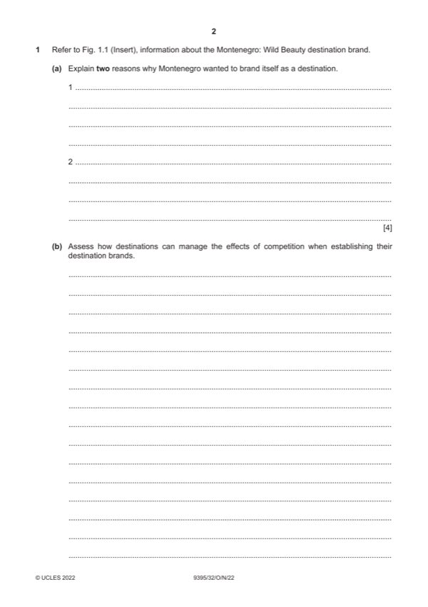

Question 1

Original paper page 2
Part 1(a) — solution
- Change unfavourable perceptions of the destination (1) to improve
- Enhance regional/local/global awareness of the country (1) to promote
- To make it more appealing (1) attract a broader customer base by
- Provide consistent representation of the country (1) one brand message
- Create a common vision (1) in line with the country’s tourism strategy
Mark points
- Change unfavourable perceptions of the destination (1) to improve
- Enhance regional/local/global awareness of the country (1) to promote
- To make it more appealing (1) attract a broader customer base by
- Provide consistent representation of the country (1) one brand message
- Create a common vision (1) in line with the country’s tourism strategy
Part 1(b) — solution
- Carry out market research and market analysis – identify who the
- Carry out competitor analysis – using a range of marketing analysis
- KPIs – destination popularity, changes in arrival numbers, market share
- what does this tell them compared with where the competitors are?
- Differentiation strategies through 4P’s:
- Product – establish a USP – distinguish themselves in the market
- Pricing strategies, suitable strategies will support the product
- Place using innovative distribution channels to reach customers not
- Promotion – communication/marketing strategies, appropriate
Mark points
- Carry out market research and market analysis – identify who the
- Carry out competitor analysis – using a range of marketing analysis
- KPIs – destination popularity, changes in arrival numbers, market share
- what does this tell them compared with where the competitors are?
- Differentiation strategies through 4P’s:
- Product – establish a USP – distinguish themselves in the market
- Pricing strategies, suitable strategies will support the product
- Place using innovative distribution channels to reach customers not
- Promotion – communication/marketing strategies, appropriate
Part 1(c) — solution
- available 24 hours
- having a greater global reach
- easier to update
- shared/earned/owned/paid for media
- track/monitor responses
- cost efficient
- personalisation/customisation
- greater reduction of intangibility
- interactive – reviews, likes, hashtags etc
- NTO website – first point of contact – create positive first impression
- social media platforms – potential to reach millions of customers,
- email marketing – use of existing customer records to target repeat
- e-advertisements – using pop ups, banners etc to attract attention
Mark points
- available 24 hours
- having a greater global reach
- easier to update
- shared/earned/owned/paid for media
- track/monitor responses
- cost efficient
- personalisation/customisation
- greater reduction of intangibility
- interactive – reviews, likes, hashtags etc
- NTO website – first point of contact – create positive first impression
- social media platforms – potential to reach millions of customers,
- email marketing – use of existing customer records to target repeat
- e-advertisements – using pop ups, banners etc to attract attention
Part 1(c) — solution
Level 1 (1–4 marks) Candidates identify/describe some benefits of online
communication methods. Information may be a list of points, but
explanations are incomplete and arguments partial (if present). The
explanations lack coherent organisation and there is no attempt to discuss.
The answer is basic and shows limited knowledge and understanding of
concepts and principles with limited use of appropriate terminology.
Level 0 (0 marks) No content worthy of credit.
Mark points
- Include the ideas shown in the solution above.